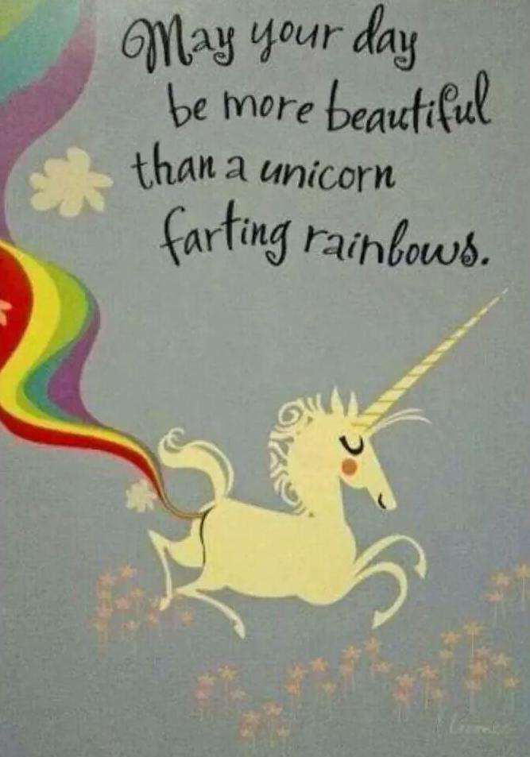

Cheer Up
I personally like to stay happy and positive while I study, I'm guessing you are the same. So here are a few funny and strange things to brighten your day, and keep you positive!
Secretly this dog loves this...
Frozen
One thing I would really advise you to do, if you get REALLY bogged down with the work you have to do is, watch a Disney movie. One of my favourites, which always cheers me up "Frozen". It has to be the cutest, most adorable movie you will ever find. Enjoy this chill hour and a half if you decide to follow my AMAZING advice ;D
How Pitbulls Really Fight

Sometimes You Just Need to Walk Your Potato

Nom Nom Nom Nom Nom Nom Nom Nom Nom
Just a little video to cheer you up :P go grab some food if you feel the urge to join in the nomming! Snacking is always good for studying!
May Your Day Be More Beautiful Than a Unicorn Farting Rainbows
M83 - Wait (Kygo Remix)
I have been obsessing over this song for the past few months. Can't get enough of it. Always puts me in a positive mood. What do you think? Happy vibes?
Fuzzy Fuzzy Cute Cute
A YouTube video, by the master, Parry Gripp. I do not know ANYONE who can resist the epic cuteness of this. Always cheers me up! Have a HAPPY Day :D